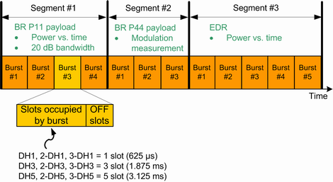
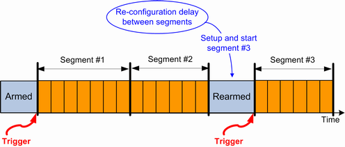
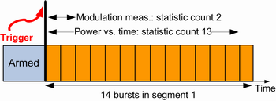
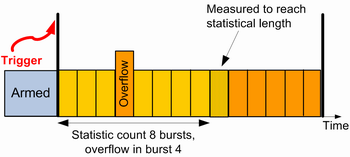

The Bluetooth multi-evaluation list mode requires option R&S CMW-KM012. In this mode, the signal is captured and processed in segments. The list mode is essentially a single-shot remote control application. When a measurement is initiated in list mode, all defined segments are measured once.
- Burst type, packet type,
- Pattern type, payload length, number of off slots,
- Expected nominal power,
- Frequency and
- Number of bursts to capture (segment length)

Each segment could be configured to measure any one or more of the following measurements: Power, modulation, 20dB bandwidth (occupied bandwidth), spectrum ACP or spectrum gated ACP. With spectrum ACP and spectrum gated ACP measurements, full Bluetooth band measurement (79 channels for BR/EDR, and 81 MHz for LE) is not possible. Statistic count (or the number of bursts to measure) for each of the measurements listed above could be set individually for each of the segment.
A single list mode measurement could configure up to a maximum of 48 segments. Maximum signal capture duration is 6700 Bluetooth timeslots (or ~ 4.18 s).
Initially, the capture mechanism is armed and awaits the trigger to start the capture process. Once the trigger is detected, then all the specified segments have to be captured.
The received signal is expected to be reconfigured at the end of a segment in preparation for the capture of the next segment. If this reconfiguration is not possible, then the capturing needs to be rearmed to await the trigger for the capture of the next segment, as shown in the figure below.

It is possible to measure all bursts of a segment or to exclude bursts at the end of the segment. The statistical length defines the number of bursts to be measured. The "current" result of a segment refers to the last measured burst of the statistical length. Additional statistical values (average, minimum, maximum and standard deviation) are calculated for the entire statistical length. The following figure provides a summary.

If consecutive segments are measured at different analyzer settings (frequency and/or expected nominal power), R&S CMW changes the analyzer settings during the capture of the last burst of the first segment. This change impairs the accuracy of the measurement results for this last burst. Therefore, exclude this burst from the statistical length. Alternatively, for such segments ensure that the number of captured bursts is at least one more than the maximum of the statistic counts specified for the measurements within that segment.
Results of the bursts that cannot be measured accurately, for example, because of overflow, low signal or synchronization error can be included or excluded from the measurement. Each segment is individually configurable to measure on exception. In that case, the measurement still tries to provide results for the specified statistical length. If not enough bursts of the segment can be measured, it results in a shorter statistical length. The reached statistical length, a reliability indicator for the measurement and a reliability indicator for the segment are included in measurement results.
In the example shown below, overflow occurs in the fourth burst. The samples of this burst are discarded and burst number 9 is measured also to reach the specified statistical length of 8 bursts.

The list mode is essentially a single-shot remote control application. When a measurement is initiated in list mode, all defined segments are measured once. Afterwards, the results can be retrieved using FETCh commands.
The following remote control commands are used for list mode settings and result retrieval.
Parameters | SCPI commands |
|---|---|
Activate / deactivate list mode | |
Number of segments | |
Segment configuration (burst type, packet type, payload length, segment length, level, frequency, LE PHY, LE coding ...) | CONFigure:BLUetooth:MEAS:MEValuation:LIST:SEGMent:SETup... e.g., |
Statistical length | |
Result activation | CONFigure:BLUetooth:MEAS:MEValuation:LIST:SEGMent:RESults... e.g., |
R&S CMWS connector | |
Retrieve results | FETCh:BLUetooth:MEAS<i>:MEValuation:LIST:SEGMent<no>:... |
The list mode can be deactivated via command (see table above) and also via the GUI:
Go to local using the corresponding hotkey.
The active list mode is indicated in the upper right corner of the current view by the words "List Mode".
Open the configuration dialog box. Disable the list mode in section "Measurement Control".
Global and list mode parameters The following parameters could be set individually for each segment.
All other parameters are treated as global, for example:
|